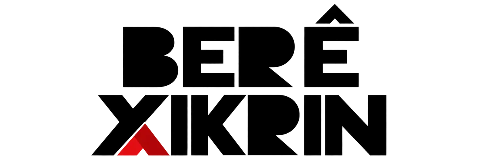
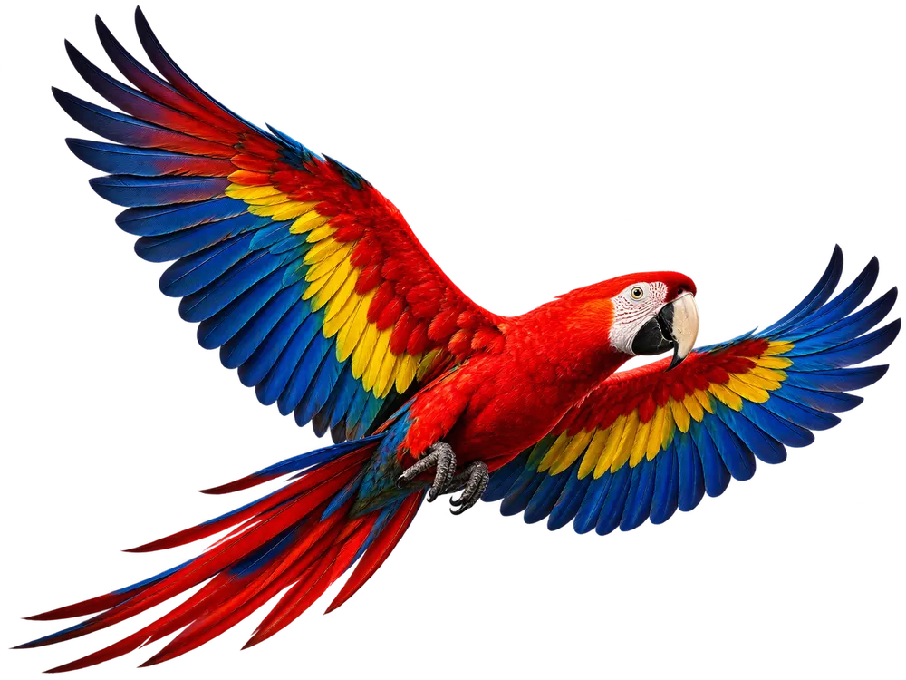
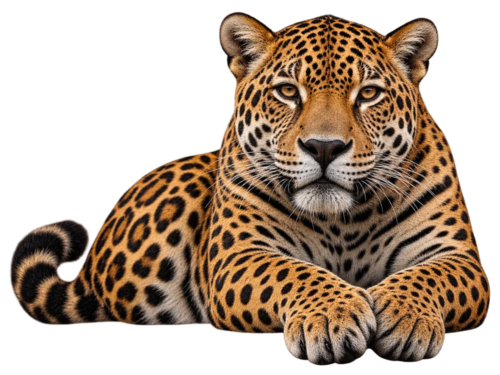
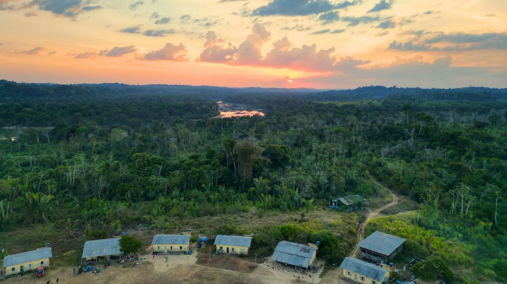
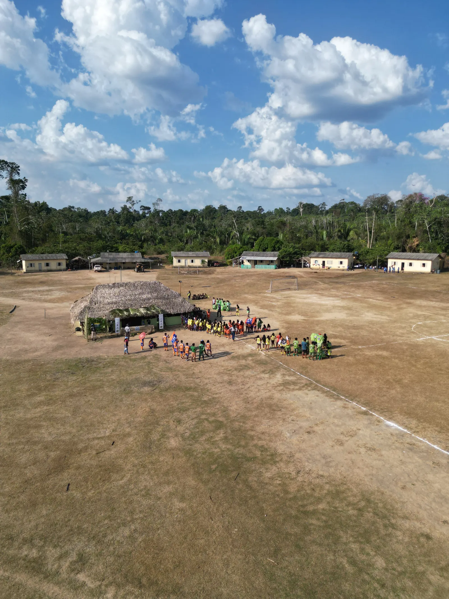
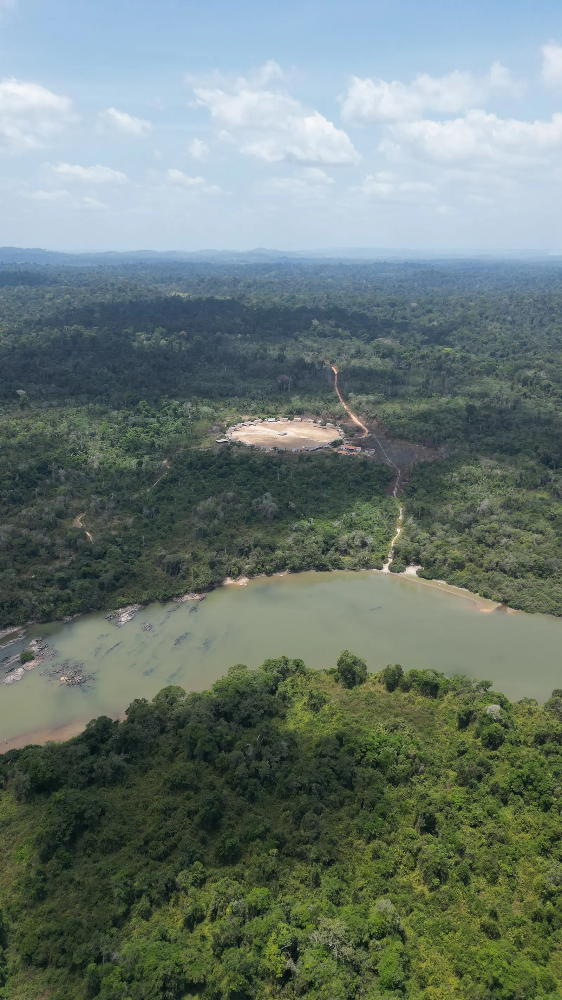
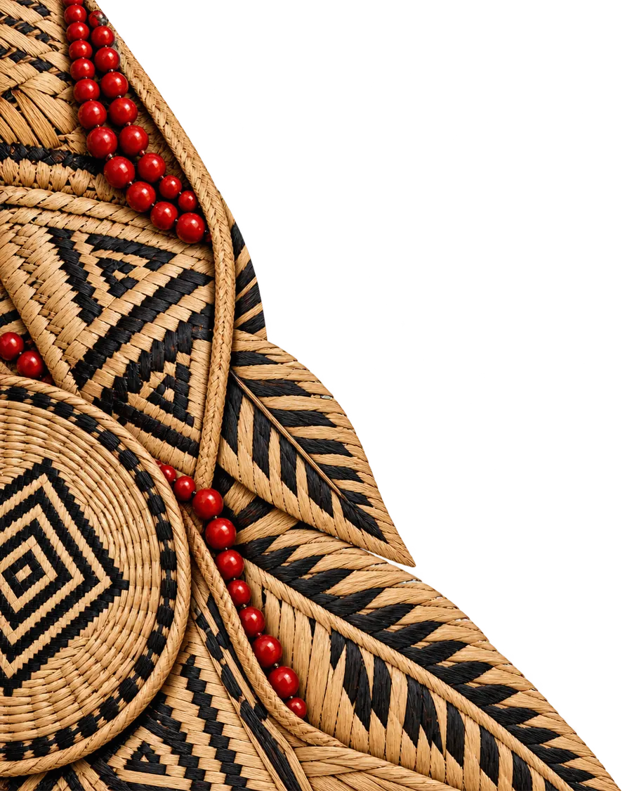

Associação Indígena Berê Xikrin da TI Trincheira-Bacajá. Povo Mẽbêngôkre, guardiões do Rio Bacajá.
Conheça a Berê Apoie

Be Vietnam Pro no texto corrido. Nos autodenominamos Mẽbêngôkre, que significa “gente do buraco d’água ou gente da água grande”, e ocupamos hoje a Terra Indígena Trincheira Bacajá.

300 hectares de floresta voltando a crescer.

A Ngàb no centro da aldeia.

Jovens cuidando do Rio Bacajá.

Cultura